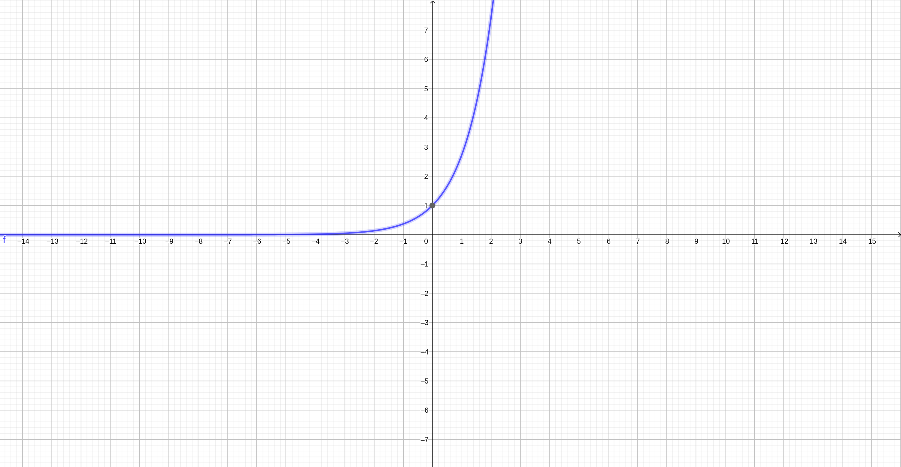
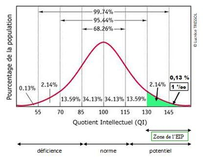

Il semblerait que souvent lorsqu'on pose la question "mais à quoi ça sert"
on ne cherche pas vraiment à quoi ça sert... On cherche avant tout à avertir
celui qui nous écoute qu'on est anxieux. Et votre anxiété est logique! On vous dit:
"il faut que vous sachiez faire ceci pour réussir votre vie" et malheureusement vous n'y arrivez pas...
Pas tout de suite. Car c'est dur.
Mais le problème n'est pas dans la difficulté! Il est dans le fait que vous n'y arriviez pas tout de suite.
Des choses difficiles vous aurez à en apprendre, peu importe où vous irez, y compris si ce sont des choses que vous aimez:
pour quelqu'un qui aime la mécanique ce sera un moteur qu'il n'a jamais vu, pour un sportif ce sera une performance... Mais
avec du temps et de la motivation vous pouvez tout réussir!
Malheureusement, parfois il est impossible d'avoir tout son temps. Dans ce cas-là il faut savoir en gagner.
Et une première façon de gagner du temps est dans le titre: gardez votre calme. Le stress et la frustration paralysent
votre capacité à comprendre, à réfléchir et à mémoriser... Sans compter qu'ils blessent aussi votre motivation.
Il existe beaucoup de techniques pour retrouver et conserver son calme: faire du sport, prendre l'air quelques minutes,
inspirer et respirer profondément, écouter une musique reposante, méditer, regarder une image apaisante, prendre soin de soi
un moment... Choisissez ce qui vous aide le mieux. On ne perd jamais 10 à 20mn pour retrouver son calme quand on parvient
à comprendre ensuite en 10mn ce qui nous aurait pris 4h voire une journée à maîtriser!
Et pour celles ou ceux pour qui tout ceci ne marche pas, retenez une chose: les mathématiques ne sont pas un test de QI.
Sinon on appellerait les mathématiques: test de QI. Nous avons tous des talents et des capacités différentes qui peuvent
rendre service à celles et ceux qui vous entourent! Nous sommes donc tous là pour quelque-chose...
Les multiples usages des fonctions
Allons à présent au coeur de notre sujet: à quoi servent les fonctions? À plein de choses! Et selon où vous irait vous les
utiliserez tous les jours ou une fois tous les ans voire jamais.
Si vous allez vers la physique:
Aucun mystère ici, vous utiliserez tous les jours des fonctions... Très probablement.
Pourquoi? Et bien peut-être parce que vous voulez faire décoller une fusée comme Elon Musk et son entreprise Space X.
Oui, la courbe blanche est une représentation graphique d'une fonction qui sert de plan de vol. Bon, en vérité
il s'agit de plusieurs fonctions car chaque événement (découplages des réacteurs, déploiements d'outils, etc.) modifie
des variables et demande donc à redéterminer une nouvelle fonction. Mais vous avez là une manifestation réelle, physique
d'une fonction!
Si vous allez vers la police scientifique ou l'armée:
La ballistique est l'étude des mouvements des projectiles. Elle se base sur la mécanique, une branche de la physique.
Cette étude est vitale pour les artilleurs à l'armée ou résoudre des meurtres grâce aux policiers scientifiques. La
preuve en image:
Là encore la courbe en pointillés est une fonction et la trajectoire du boulet de canon est une manifestation physique
de cette dernière!
Si vous voulez développer des jeux vidéos:
Malheureusement si on dit "lance un boulet de canon quand le personnage tire" à un ordinateur ce dernier ne comprendra rien!
Il faut tout lui dire: le personnage est une variable avec des caractéristiques elles-mêmes variables, le canon a un interrupteur, etc.
Et parmis toutes ces choses qu'on doit lui dire il y en a une qui nous intéresse: quelle est la trajectoire du boulet de canon...
Et là vous l'aurez compris, la fonction qui sert à l'artilleur sert aussi au programmeur! La même fonction qui permet de prévoir la
trajectoire du boulet de canon dans la vie réelle est utilisée dans les jeux vidéos.
Amateurs de FPS, de jeux d'aventures, de MMO, bref, à tous les joueurs: les fonctions sont vitales en programmation.
Si vous avez l'âme d'un biologiste:
Savez-vous à quelle vitesse se développe une population de bactéries? À la vitesse de l'exponentielle! Une autre fonction qui est encore
au-dessus de notre niveau mais qui est utilisée aussi en économie, en physique nucléaire, etc.

Si vous voulez devenir psychologue, géographe, sociologue, économiste, linguiste...
Ici tout dépend exactement de ce que vous voulez faire en psychologie, en sociologie, etc.
Certain n'en ont jamais besoin d'autres utilisent les fonctions régulièrement.
Je disais au-dessus que les mathématiques n'étaient pas un test de QI... La preuve! C'est que le test de QI
qui se sert d'une infime partie des mathématiques: la courbe de Gauss.

Oui, la courbe que vous voyez est bien un autre type de fonctions. Ici elle sert à "évaluer le potentiel intellectuel".
En vérité vous pouvez être extrêmement brillant et être tout à gauche de cette courbe... Pourquoi? Parce que cette courbe représente
une moyenne d'une population. Aussi si tout le monde est Einstein est que vous êtes "juste" intelligent alors vous serez à gauche de
cette moyenne. Le test de QI que vous redoutez pour certain ne dit définitivement pas grand chose.
Conclusion
Nous avons vu quelques exemples de fonctions qui existent et sont utilisées dans votre environnement parfois quotidien.
Mais pour les plus malins d'entre vous vous me demanderez: et les fonctions linéaires? Et affines? À quoi elles servent?
Elles ont des usages plus limités, trop particuliers pour que je vous révèle toute leur utilité.
Pour vous elles sont une porte d'entrée vers le monde des fonctions. Elles vous permettent d'apprendre de nouveaux mots comme
"image", "antécédent", "abscisse", "ordonnée", ou encore "fonction", tout en évitant d'être certaines complications. Elles sont, en bref,
une marche d'escalier nécessaire pour pouvoir résoudre les véritables problèmes que vous rencontrerez peut-être plus tard.
En attendant, pour vous aider à maîtriser tout ça je vous ai composé un petit résumé de tout ce chapitre sur les images, les réels
et les fonctions. Il vous attend à la prochaine et dernière page de ce chapitre.